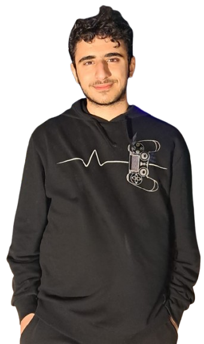
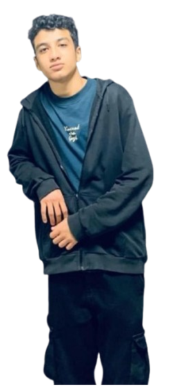
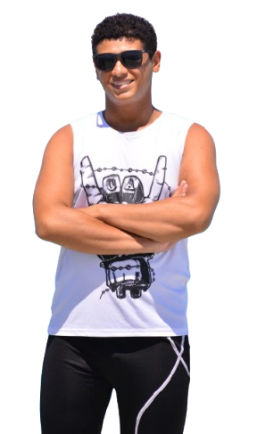
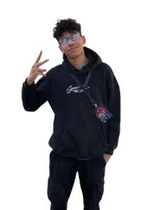

Egypt feeds over 105 million people — yet faces mounting pressure from water scarcity and harsh climate conditions. Conventional farming methods are struggling to keep pace.
AgriPod proposes an automated, closed-loop feedback control system for smart greenhouse production. By continuously monitoring temperature, soil moisture, and light intensity, the system deploys targeted actuators to keep all three parameters within optimal ranges — entirely without human intervention.
Built from recycled materials and designed to run 6+ hours autonomously, AgriPod is a scalable, cost-effective answer to food insecurity — replicable across Egypt and developing nations worldwide.



